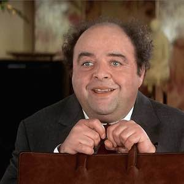

François Pignon

François pignon
Mes coordonnées
François Pignon
1337 rue des inconnus
73376 le bourget du lac cedex
Mon curriculum vitae
- L'Emmerdeur (1973) : Jacques Brel
- Les Compères (1983) : Pierre Richard
- Les Fugitifs (1986) : Pierre Richard
- Le Dîner de cons (1998) : Jacques Villeret
Mes hobbies
- constuction en allumettes :
- La tour effeil
- la gare de Lyon
- imitation :
- producteur belge
- Jacques Chirac
Qualités personnelles
Je suis souvent invité à des diners.